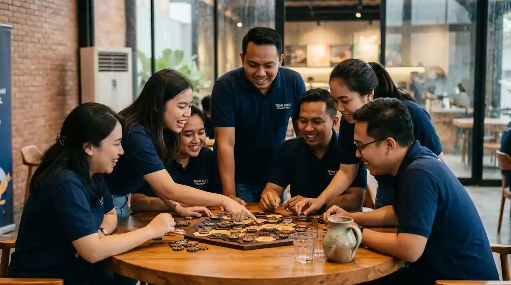

Mengapa Rencana Cadangan Hujan Penting di Malang Raya?
Kawasan dataran tinggi seperti Batu dan sekitarnya punya cuaca yang bisa berubah cepat. Pagi yang cerah dapat berganti hujan di siang hari. Bila acara hanya mengandalkan area terbuka, hujan bisa membuat jadwal berantakan dan peserta kecewa.
Dengan rencana cadangan, panitia punya langkah jelas sehingga kegiatan tetap berjalan. Peserta pun merasa diperhatikan karena acara tidak berhenti begitu saja. Rencana ini sebaiknya dibicarakan sejak awal dengan vendor, bukan baru dipikirkan saat hujan sudah turun. Manfaat kegiatan kelompok secara umum dibahas di artikel manfaat utama outbound team building bagi perusahaan di Malang.
Permainan Apa yang Cocok untuk Outbound Indoor?
Permainan di dalam ruangan biasanya lebih menekankan otak dan komunikasi ketimbang tenaga. Hal ini justru membuatnya cocok untuk peserta dengan beragam usia dan kondisi fisik.
- Teka-teki tim: mendorong diskusi, pembagian peran, dan pengambilan keputusan bersama.
- Membangun menara atau jembatan: memakai bahan sederhana seperti kertas, sedotan, atau pita.
- Permainan instruksi: ketika satu anggota memberi arahan dan lainnya menjalankan untuk melatih komunikasi.
- Estafet ruangan: versi ringan estafet yang aman dimainkan di aula.
- Tebak kata dan simulasi peran: yang menyegarkan suasana sekaligus melatih empati.
Ide permainan lain yang dapat disesuaikan tersedia di artikel 7 rekomendasi game outbound team building seru di Batu Malang.

Kapan Outbound Indoor Lebih Tepat Dipilih?
Tidak semua kegiatan harus di luar ruang. Tabel berikut memberi gambaran situasi yang cocok untuk outbound indoor:
| Situasi | Alasan memilih indoor | Catatan |
|---|---|---|
| Musim hujan | Kegiatan tetap berjalan tanpa terganggu cuaca | Siapkan ruangan sejak awal |
| Peserta sedikit | Permainan strategi sudah cukup efektif | Cocok untuk tim kecil |
| Waktu singkat | Tidak perlu perjalanan ke lokasi luar | Bisa dilakukan di kantor atau sekolah |
| Anggaran terbatas | Biaya lokasi dan transportasi lebih rendah | Bandingkan penawaran tertulis |
| Peserta beragam kondisi fisik | Permainan tidak menuntut tenaga besar | Beri peran yang beragam |
Contoh di atas hanya gambaran. Pilihan sebenarnya disesuaikan dengan tujuan, jumlah peserta, dan lokasi.
Bagaimana Menyiapkan Rencana Cadangan Saat Hujan?
Rencana cadangan yang baik mencakup beberapa hal. Pertama, tentukan ruangan atau area beratap yang bisa dipakai bila hujan turun, serta pastikan kapasitasnya cukup untuk seluruh peserta. Kedua, siapkan versi permainan yang bisa dimainkan di dalam ruangan. Ketiga, tetapkan siapa yang berwenang memutuskan perpindahan kegiatan dan kapan keputusan itu diambil.
Beri tahu peserta bahwa ada kemungkinan perubahan lokasi, serta minta mereka membawa pakaian dan alas kaki yang sesuai. Daftar perlengkapan peserta tersedia di artikel checklist perlengkapan peserta outbound Batu Malang.
Apa yang Perlu Diperhatikan pada Ruangan Indoor?
Ruangan menentukan kenyamanan permainan. Pastikan luasnya memadai untuk jumlah peserta, lantainya tidak licin, dan sirkulasi udaranya baik. Periksa juga ketersediaan pengeras suara, stopkontak, serta akses menuju toilet dan tempat istirahat. Singkirkan benda yang berpotensi menyebabkan cedera, lalu atur posisi tim agar tidak saling berdesakan.
Bagaimana Menjaga Suasana Tetap Hidup di Dalam Ruangan?
Tantangan outbound indoor adalah menjaga energi peserta. Variasikan jenis permainan antara yang menuntut berpikir, bergerak, dan berdiskusi. Beri jeda singkat di antara sesi agar peserta tidak jenuh. Fasilitator yang berpengalaman biasanya mampu membaca suasana dan mengganti permainan bila semangat peserta mulai turun.
Bagaimana Menggabungkan Sesi Indoor dengan Materi Pelatihan?
Salah satu keunggulan outbound indoor adalah kemudahannya dipadukan dengan materi di ruangan. Misalnya, pagi hari diisi pemaparan singkat tentang komunikasi tim, lalu dilanjutkan permainan yang memberi kesempatan mempraktikkan materi itu. Cara ini membuat pelajaran lebih melekat karena peserta langsung mencoba apa yang baru mereka dengar.
Pastikan porsi permainan lebih besar daripada pemaparan agar peserta tidak merasa seperti mengikuti kelas biasa. Akhiri dengan sesi refleksi singkat untuk menghubungkan pengalaman bermain dengan situasi kerja atau belajar sehari-hari.
Bagaimana Menilai Hasil Outbound Indoor?
Kumpulkan kesan peserta segera setelah acara, lalu amati perubahan komunikasi dan kerja sama dalam beberapa minggu berikutnya.
Kesalahan Umum dalam Outbound Indoor
- Tidak menyiapkan rencana cadangan: sehingga hujan membuat acara terhenti.
- Memilih ruangan yang terlalu sempit: akibatnya permainan tidak nyaman dan berisiko.
- Memakai permainan yang sama persis dengan outdoor: padahal ruang gerak terbatas.
- Mengabaikan refleksi: sehingga peserta hanya bermain tanpa pelajaran.
- Tidak membicarakan skenario hujan dengan vendor: padahal itu menentukan kelancaran acara.